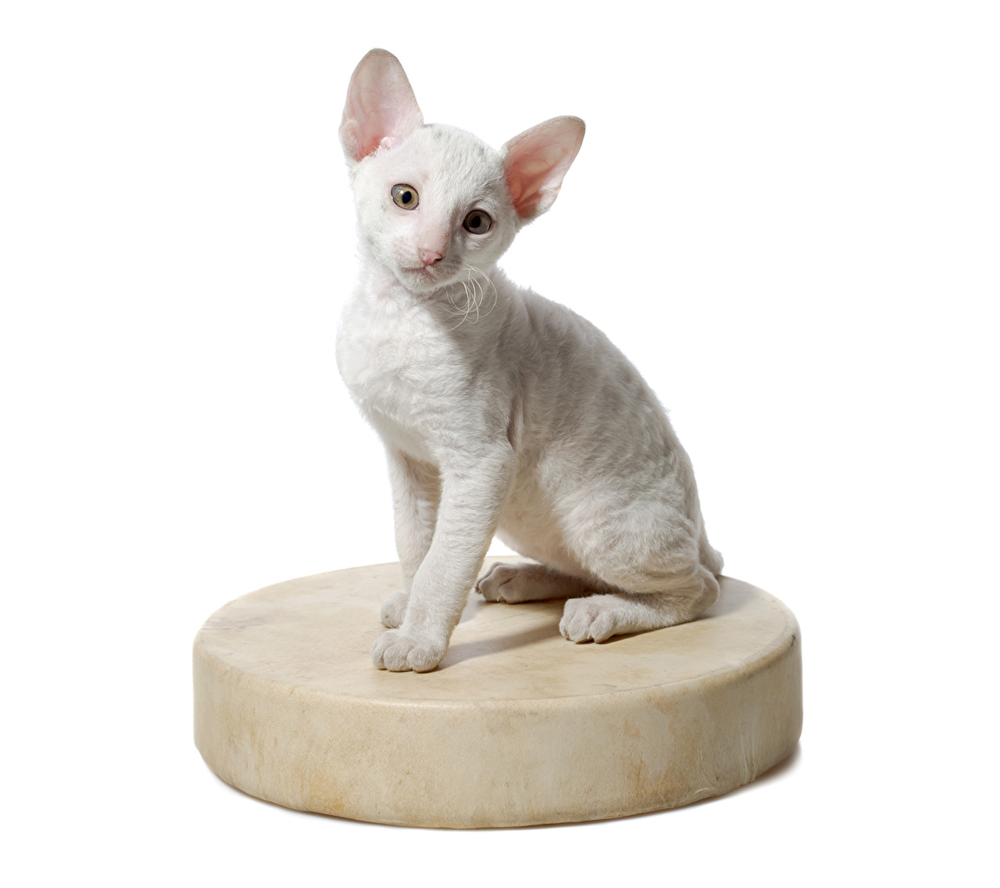
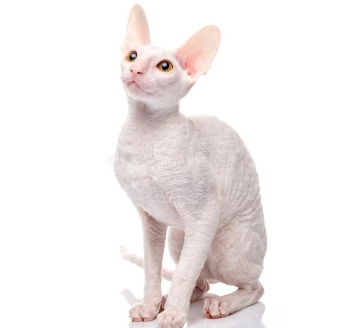

My personal opinion
The Cornish Rex is an adventurous animal that readily adapts to new situations and environments.
It will explore wherever - and whenever - it can.
It often will be seen jumping into or onto refrigerators, examining washing machines or climbing into open clothes driers.

Children & Other Pets
The active and social Cornish Rex is a perfect choice for families with children and cat-friendly dogs.
He will play fetch as well as any retriever, learns tricks easily and loves the attention he receives from children who treat him politely and with respect.